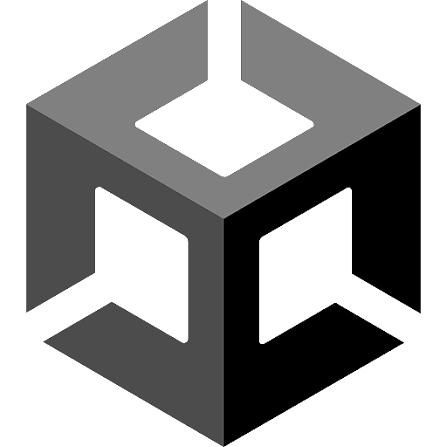
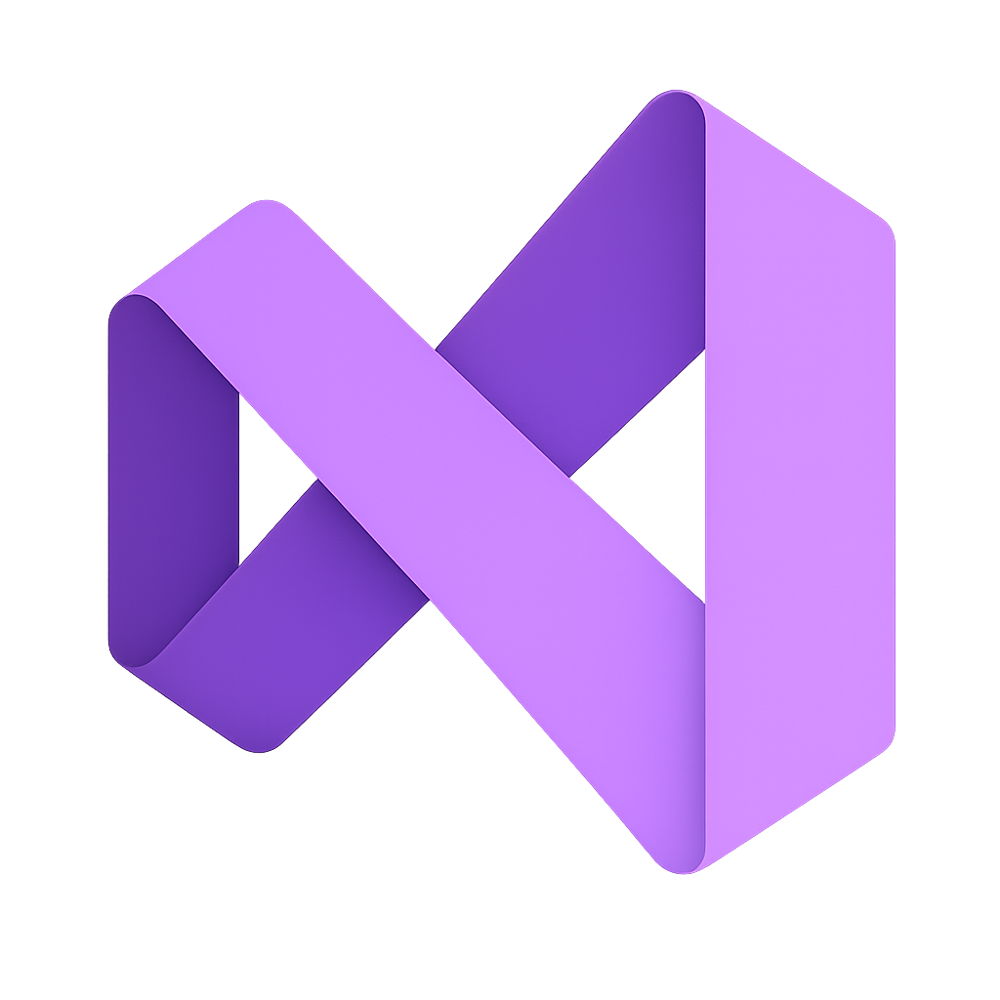
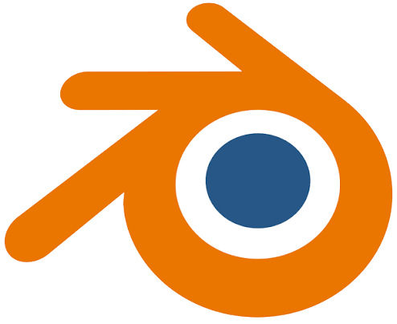

My Game Projects
01
CodeKey
A Collaborative projects where you battle your way through a neon-drenched cyberpunk world in this turn-based educational RPG. Solve and answer real programming challenges derived from C-based languages to unleash powerful attacks, defeat virus enemies, and recover the lost Core Libraries.



TBEGS
02
TBEGS(in development)
This game is still in development. A top down 2d turn based educational game, where players learn programming concepts through gameplay. Inspired from classic gameboy pokemon games like Emerald etc.
03
The Ward
A very short mini horror game, designed for practice purposes on 3d environment design.

04
Ninja Speed
My first game project, a fast-paced side-scrolling platformer featuring a ninja character.
05
Flappy Bird REMAKE
A modern take on the classic Flappy Bird game, built with Unity.
06
Recoil Rush
A fast-paced shooter game where players control a character with a powerful recoil mechanism.